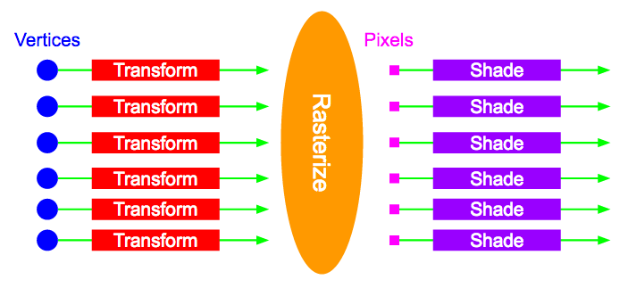

The WebGL
Graphics Pipeline
Tarek Sherif
Outline
- Motivation
- Basic Architecture
- Pipeline Components
- Advantages and Limitations
Motivation
-
Having a better understanding of the graphics pipeline will help us:
- Understand what effects are possible
- Understand the performance costs of those effects
- Come up with new effects?
Basic Architecture
-
The pipeline must handle massive amounts of data in minimal time
- Potentially hundreds of thousands of vertices
- Transformation, lighting, texturing, shading
- Repeat every 16ms!
Basic Architecture
-
Massive parallelism
- SIMD
- Transformations applied independently to each vertex
- Shading applied independently to each pixel
Basic Architecture
Pipeline Components
Set Up
- Describe the geometry, normals, UVs
- Set parameters that will go into shading calculations
Vertex Shader
- Programmable
- Applied independently to each vertex
- Move object to its position relative to the camera and other objects
Three Steps
-
Model transformation
- Translate, rotate, scale model to its position in "the world"
-
View transformation
- Move object into its position relative to camera
-
Projection transformation
- Usually a perspective projection to give depth
- Usually all combined into a single "MVP" matrix
Vertex Shader
GLSL Code
attribute vec4 aPosition;
uniform mat4 uMVP;
void main() {
gl_Position = uMVP * aPosition;
}
Rasterization
- Map points on model surface to pixels of the screen to create "fragments"

Rasterization
- Vertex attributes will be interpolated across the pixels they enclose
- Each fragment contains interpolated values for an object that covers a given pixel
-
Might produce more than one fragment per pixel
- One for each object that covers the pixel
Rasterization
-
Interpolated attributes for a fragment can be anything, but typically include
- Position
- Normals
- Colors
- UVs
- Depth
Fragment Shader
- Programmable
- Use fragment data to calculate pixel color
-
Multiple fragments might be considered to calculate the color of a pixel
- Choose closest fragment for opaque objects
- Blend several fragments for transparent objects
Fragment Shader
GLSL Code
varying vec4 vPosition;
varying vec4 vNormal;
varying vec4 vColor;
uniform vec3 uLightPos;
uniform vec3 uLightColor;
void main() {
vec3 lightDir = normalize(uLightPos - vPosition.xyz);
float l = max(dot(normalize(vNormal), lightDir), 0.0);
gl_FragColor = vec4(l * vColor.rgb * uLightColor, vColor.a);
}
Rendering
- Final application of colors to pixels of the screen
- Includes some logic such as blending and depth testing
Advantages and Limitations
-
Key factors to consider:
- Parallel processing is intrinsic to the system
- Programmable vertex and fragment shaders
Advantages
-
FAST
- Complexity of the scenes we can render is a direct result of parallelism
- Programmable shaders are extremely flexible
Limitations
-
Global effects are difficult
- Shadows
- Reflection
- Refraction
-
Usually require the scene be rendered multiple times
- Comes at a performance cost